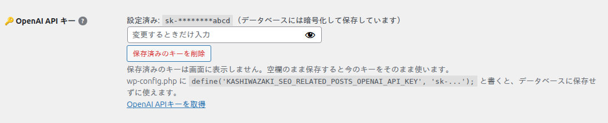
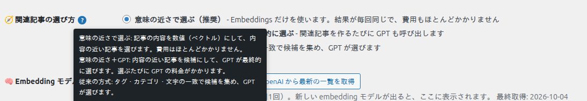
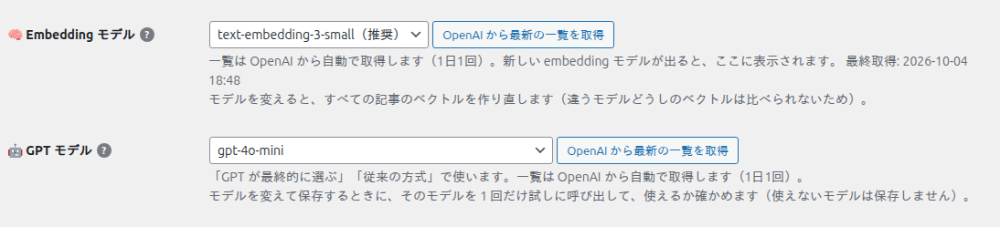
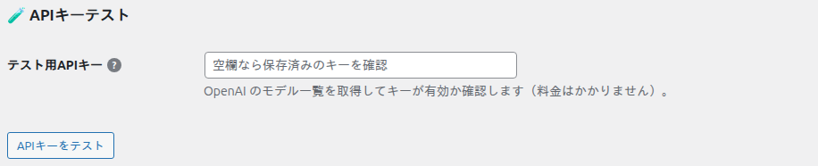
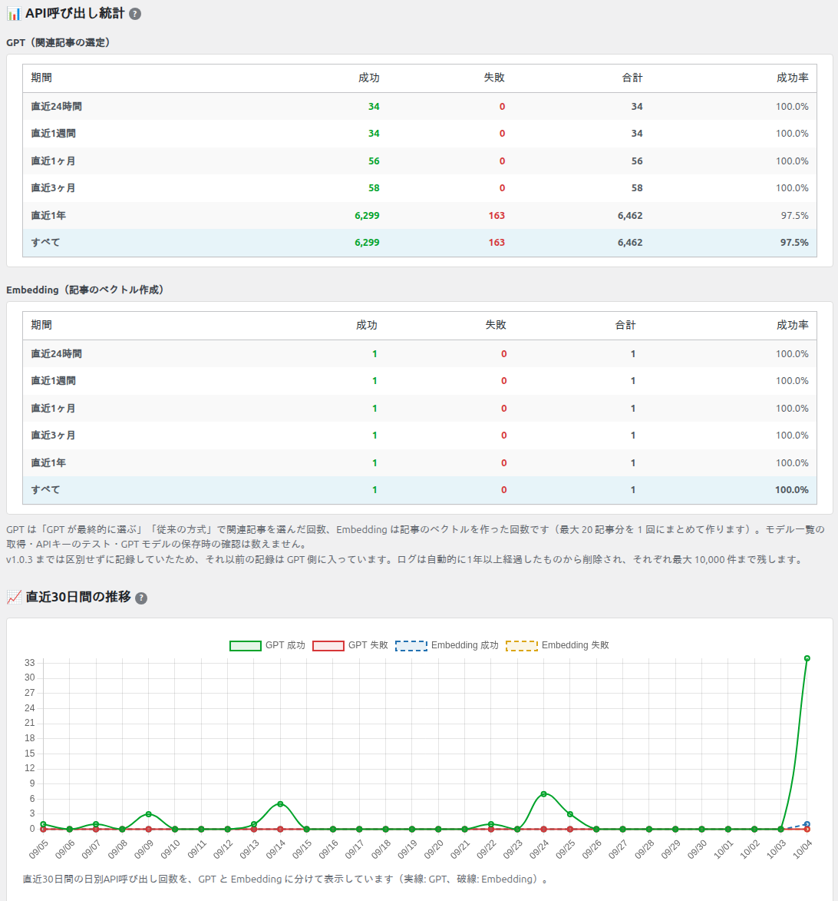

AIのAPI設定
「🤖 AIのAPI設定」タブでは、OpenAI の APIキー、関連記事の選び方、使うモデル、記事のベクトルの作成、API の呼び出し回数を設定・確認します。各項目の「?」にマウスを乗せると、画面でも説明が表示されます。

OpenAI API キー

| 項目・ボタン | 説明 |
|---|---|
| 設定済み: sk-********abcd | 保存済みのキーの先頭と末尾だけを表示します。キーそのものは画面（HTML）に出しません。 |
| 入力欄（変更するときだけ入力） | 新しいキーを入れて保存すると置き換わります。空欄のまま保存すると今のキーをそのまま使います。 |
| 保存済みのキーを削除 | 押すと確認のダイアログが出て、OK でキーを削除します。 |
| OpenAI APIキーを取得 | OpenAI Platform のキー作成画面を開きます。 |
キーはデータベースに暗号化して保存します（鍵は wp-config.php の認証用キー・ソルトから作ります）。wp-config.php のソルトを変えると保存済みのキーを読めなくなるので、その場合はキーを入れ直してください。wp-config.php に定数 KASHIWAZAKI_SEO_RELATED_POSTS_OPENAI_API_KEY を書けば、データベースにキーを置かずに使えます（この場合、設定画面の入力欄は表示されません）。
関連記事の選び方

| 選択肢 | 説明 |
|---|---|
| 意味の近さで選ぶ（推奨） | 記事のベクトルの近い順に選びます。結果は毎回同じで、費用はほとんどかかりません。GPT は使いません。 |
| 意味の近さで候補を絞り、GPT が最終的に選ぶ | 内容の近い記事を候補にして、その中から GPT が選びます。関連記事を選ぶたびに GPT の料金がかかります。 |
| 従来の方式 | タグ・カテゴリ・文字の一致で候補を集め、GPT が選びます。v1.0.3 までの方式です。 |
3 つの違いは「関連記事が選ばれる仕組み」で図にしています。選び方を変えて保存すると、全記事の関連記事キャッシュを消します（次に表示されたときに新しい方式で選び直します）。
Embedding モデル・GPT モデル

| 項目 | 説明 |
|---|---|
| Embedding モデル | 記事をベクトルに変えるモデルです。既定は text-embedding-3-small（推奨）。変えると全記事のベクトルを作り直し、関連記事キャッシュも消します（モデルが違うベクトルどうしは比べられないため）。 |
| GPT モデル | 「意味の近さ＋GPT」「従来の方式」で使うモデルです。「意味の近さで選ぶ」では使いません。モデルを変えて保存するときに 1 回だけ試しに呼び出し、関連記事の選定に使えないモデル（Responses API 専用のモデルなど）は保存しません。 |
| OpenAI から最新の一覧を取得 | OpenAI の GET /v1/models から、使えるモデルの一覧をその場で取り直します。一覧は 1 日 1 回は自動で取り直すので、ふだんは押さなくても新しいモデルが表示されます。 |
ベクトルの作成状況

「作成済みの記事数 / 対象の公開記事数」と、使っているモデルを表示します。
- 記事を公開・更新すると、その記事のベクトルを自動で作ります（WP-Cron）。
- 「未作成の記事をまとめて作成」を押すと、まだの記事のベクトルをその場で作ります。導入直後やモデルを変えた直後に使います。
- APIキーが無いときはボタンを押せません。
API設定を保存
ここまでの項目は「API設定を保存」で保存します。保存すると、変えた内容によって次のことが起きます。
| 変えたもの | 保存したときに起きること |
|---|---|
| APIキー | 暗号化して保存します。 |
| 関連記事の選び方 | 全記事の関連記事キャッシュを消します。 |
| Embedding モデル | 全記事の関連記事キャッシュを消し、ベクトルを作り直します。 |
| GPT モデル | 試しに 1 回呼び出し、使えなければ保存しません（エラーを表示します）。 |
APIキーテスト

入力したキー（空欄なら保存済みのキー）で OpenAI のモデル一覧を取得し、キーが使えるか確かめます。トークンを使わないので料金はかかりません。
API呼び出し統計

| 表示 | 説明 |
|---|---|
| GPT（関連記事の選定） | GPT で関連記事を選んだ回数です。「意味の近さで選ぶ」では増えません。 |
| Embedding（記事のベクトル作成） | 記事のベクトルを作った回数です。最大 20 記事分を 1 回にまとめるので、記事数より少なく数えられます。 |
| 期間 | 直近 24 時間・1 週間・1 か月・3 か月・1 年・すべての、成功・失敗・合計・成功率です。 |
| 直近 30 日間の推移 | 今日を含む 30 日間の 1 日ごとの回数です（実線: GPT、破線: Embedding）。 |
モデル一覧の取得・APIキーのテスト・GPT モデルを保存するときの確認は数えません。記録は 1 年を過ぎたものから自動で消し、それぞれ最大 10,000 件まで残します。v1.0.3 までの記録は区別がないため GPT 側に入っています。